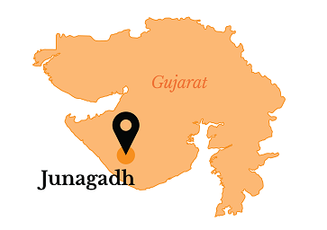

ABOUT DISTRICT
Junagadh district is located in western Gujarat and is surrounded by Arabian sea and forest area. It is located at a longitude of 20.47 N to 21.45 N and a latitude
of 70.15 E to 70.55.
The district is divided into 10 talukas of which major ones include, Junagadh, Keshod, Mangrol, Manavadar. Junagadh is famous for the Gir Sanctuary, the only abode to Asiatic lions and mountain range of Girnar which is a major pilgrimage destination.
The District Comprises within 05 Revenue Sub-Division & 10 Talukas.
| Election 2022 | Download |
|---|---|
| Covid-19 Updates | Download Guideline |

Collector & District Magistrate
Anil Ranavasiya,IAS
Phone:+91 2852 636100
Anil Ranavasiya,IAS
Phone:+91 2852 636100
| DISTRICT AT GLANCE | |
|---|---|
| Area | 5093.36 sq km |
| Population | 15,27,329 |
| Literacy Rate | 78.55% |
| Block | 10 |
| Villages | 547 |
